Workshop ao vivo · sábado, 14/11, às 9h · certificado de 6h
Para professoras de alunos com deficiência intelectual
Saia do sábado sabendo em que ponto da leitura está o seu aluno com deficiência intelectual. E com a atividade da segunda-feira pronta.
Ao vivo, com a professora Taline Nogueira, que alfabetiza na rede pública. Você leva as fichas e as atividades que ela usa na própria sala.
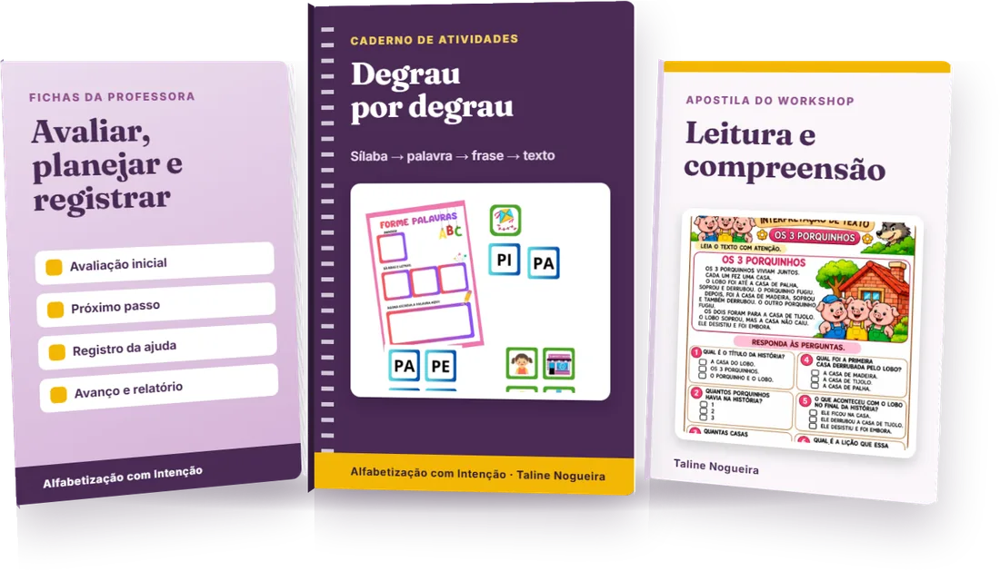
R$ 67 ou 12x de R$ 6,89 · garantia de 7 dias
Ninguém te ensinou a alfabetizar esse aluno.
Chega o laudo. Chega a cobrança de adaptar. E você fica sozinha com ele, numa sala cheia.
O ano passa, ele passa de ano sem ler, e fica a sensação de que você falhou.
Você não falhou. Faltou alguém te mostrar o caminho.
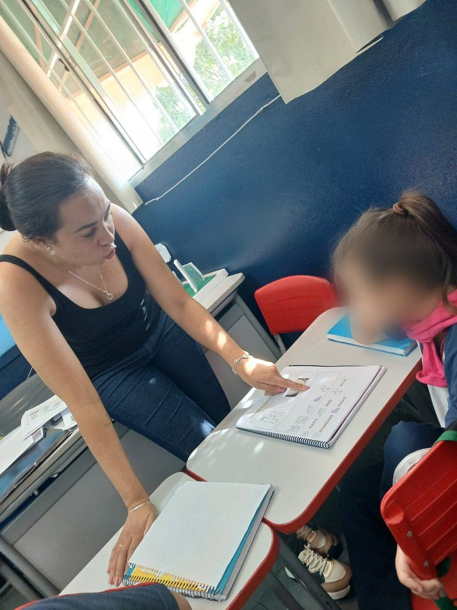
E o aluno é assim:
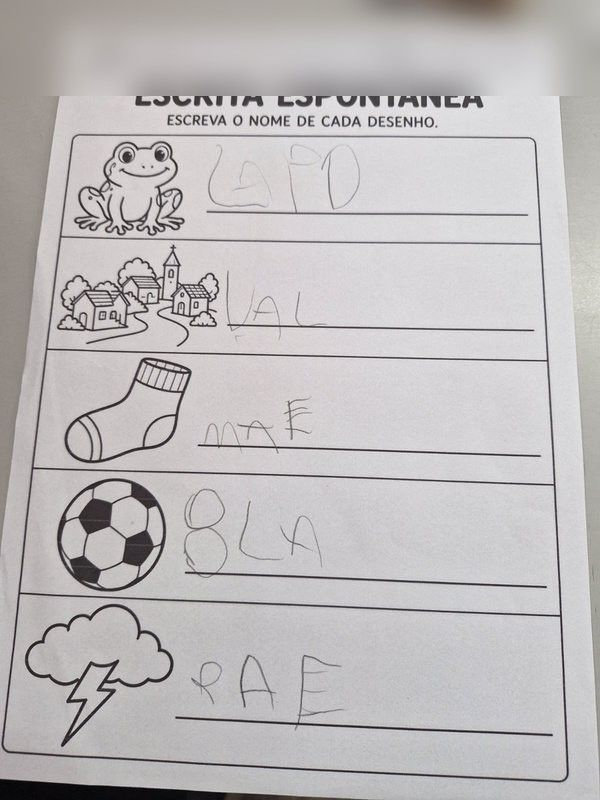
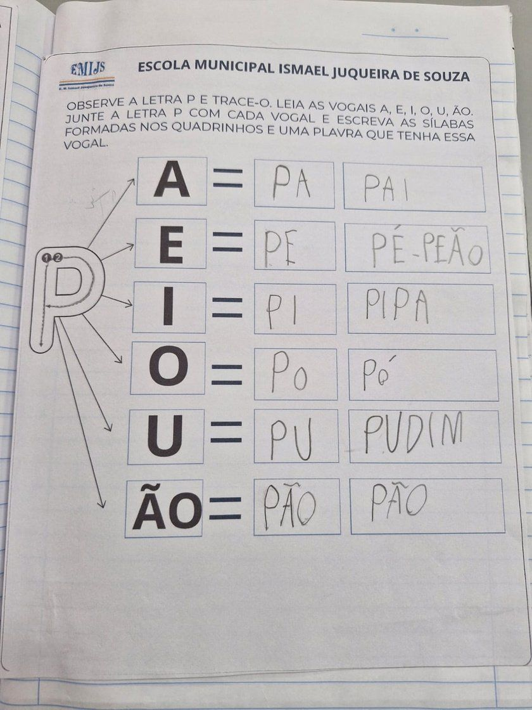
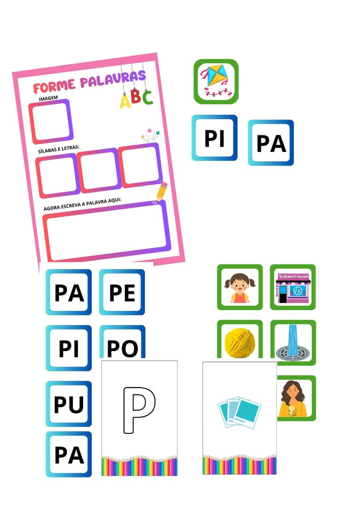
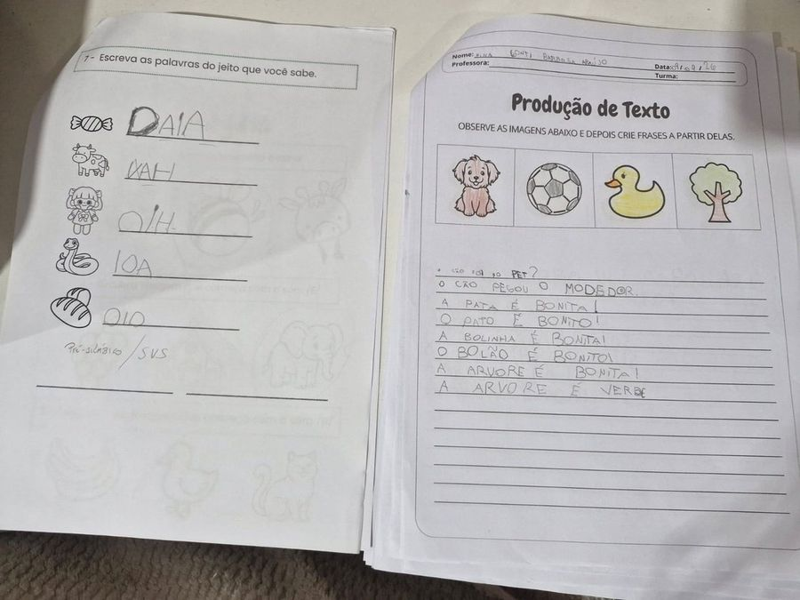
O que muda depois do sábado
Antes
Dou a mesma folha adaptada e espero
Não sei se ele avançou ou só decorou
Monto atividade à noite, sem saber se é a certa
Escrevo "não acompanha" no relatório
Depois
Sei em que degrau da leitura ele está
Sei qual atividade dar e que ajuda oferecer
Sei quando ele está pronto para o próximo passo
Escrevo no relatório o que ele já conquistou
Cobrir pontilhado e copiar letra ocupam o aluno, mas não ensinam a ler. Com a deficiência intelectual, o que muda é o tamanho do passo.
O método
O Ciclo da Alfabetização com Intenção
- Avaliar · o que ele já sabe
- Escolher o próximo passo · o menor possível
- Mediar · a ajuda que ele precisa agora
- Firmar · repetir até ficar estável
- Avançar e registrar · e mostrar no relatório
Na sala de aula da Taline
23 de 23
alunos da turma terminaram o ano letivo lendo, cada um no seu nível.
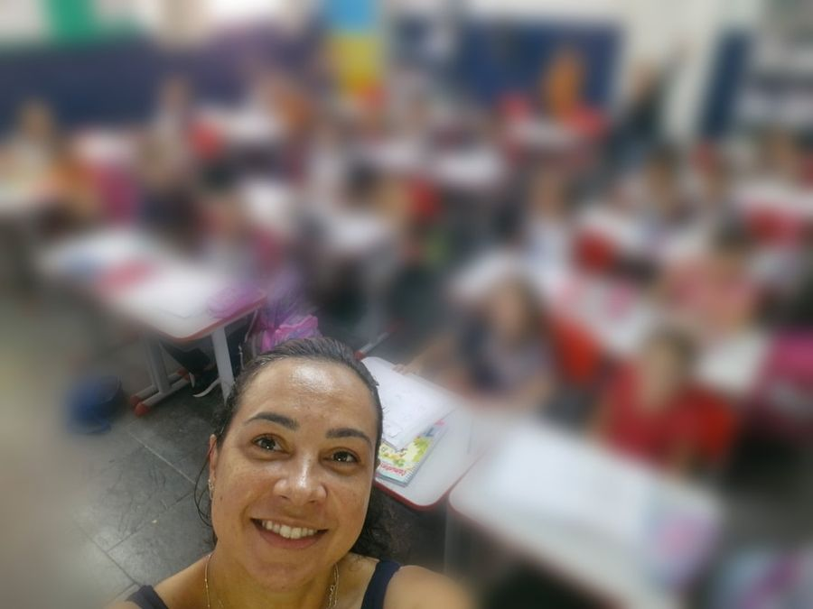
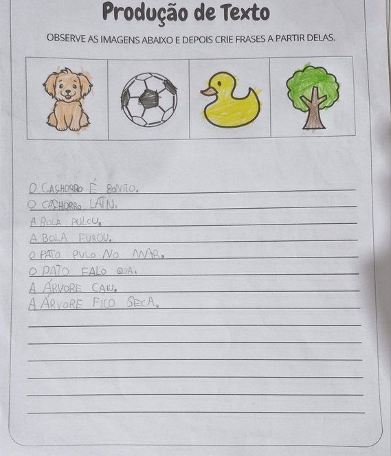
Turma de 1º ano, escola municipal, um ano letivo com intervenção diária.
O que você leva para a sua sala
Material digital em PDF, para imprimir quantas vezes precisar.
- A avaliação de um aluno seu, feita durante o workshop
- O plano do próximo passo dele: objetivo, atividade e ajuda
- Atividades prontas para imprimir, degrau por degrau
- Fichas para avaliar, planejar e registrar
- Modelo de texto para o relatório e o PEI
- Certificado de 6h e gravação por 30 dias
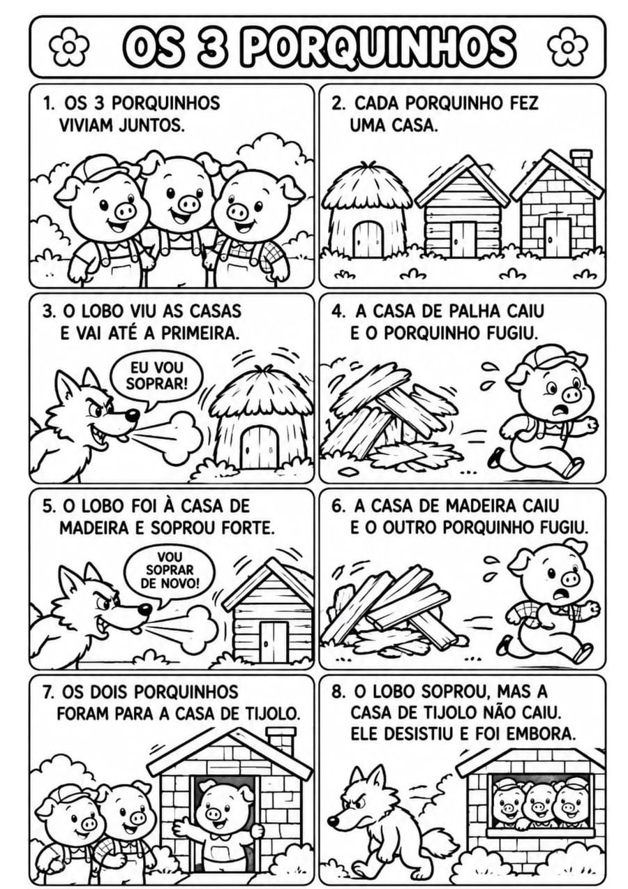
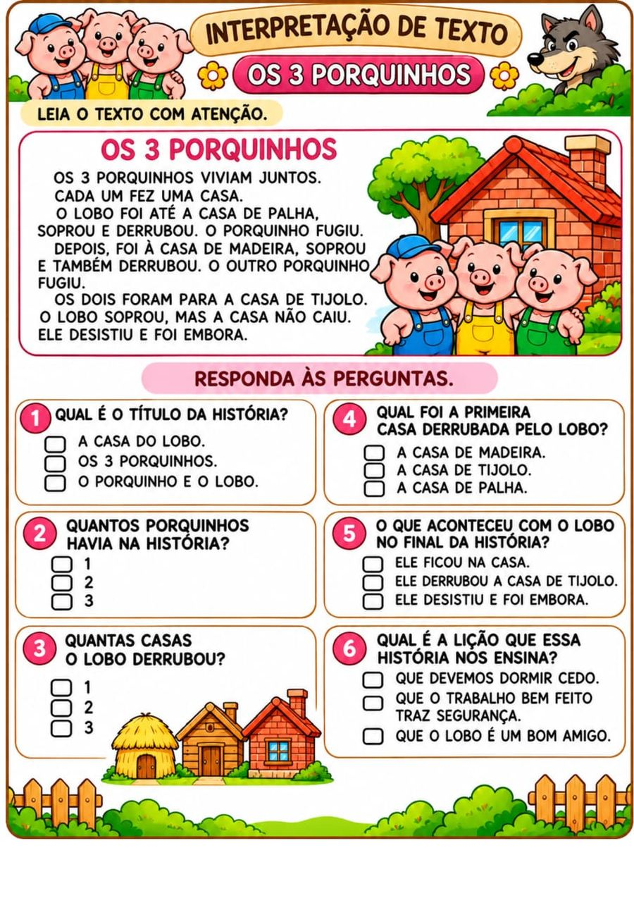
R$ 67 ou 12x de R$ 6,89 · garantia de 7 dias
Como é o sábado
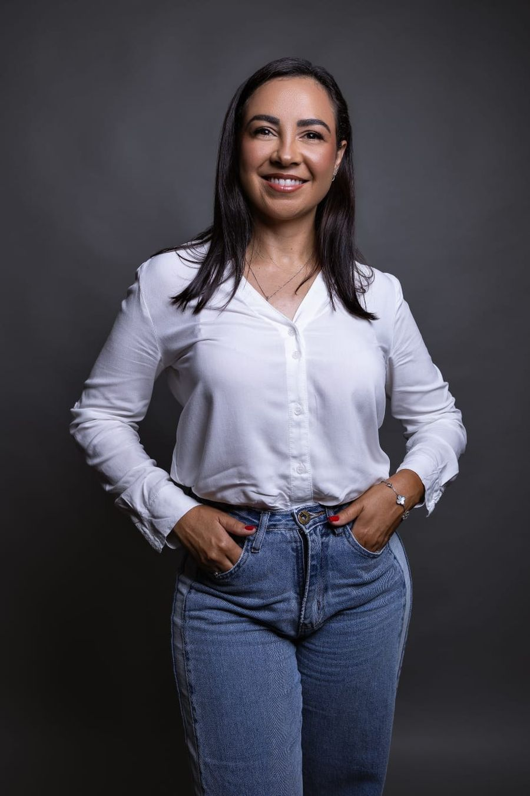
Professora Taline Nogueira
Alfabetiza na rede municipal. O que ela ensina é o que aplica na própria turma.
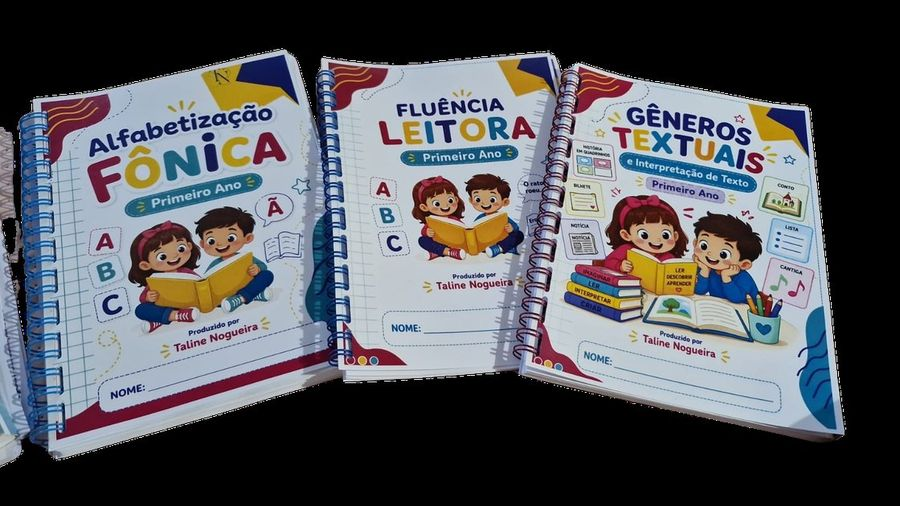
É para você se…
tem aluno com deficiência intelectual que ainda não lê
atua em sala regular, AEE, reforço ou mediação
quer critério para decidir, não mais uma lista de atividades
não é para você se procura um método pronto para aplicar igual em todos
Investimento
R$ 67
ou 12x de R$ 6,89 · Pix ou cartão
Garantir minha vaga com certificadoGarantia de 7 dias: se achar que não valeu o seu sábado, devolvemos 100%. Sem justificativa.
Dúvidas
Serve para síndrome de Down, autismo com DI e DI sem causa definida?
Serve. O ciclo parte do que a criança já sabe, não do nome da condição.
Como recebo o material?
Em PDF, para imprimir quantas vezes precisar.
Não posso o sábado inteiro.
A gravação fica disponível por 30 dias.
Minha rede segue outra linha (sondagem, construtivismo).
O ciclo funciona com o material que a escola já usa. Fônico é recurso, não bandeira.
Tem certificado?
Sim, de 6 horas.
E se não for o que eu esperava?
Você tem 7 dias de garantia. Devolvemos 100% do valor.
Na segunda-feira, o aluno vai ser o mesmo. O seu plano para ele, não.
Quero minha vaga com certificadoSábado, 14/11, às 9h · ao vivo · certificado de 6h